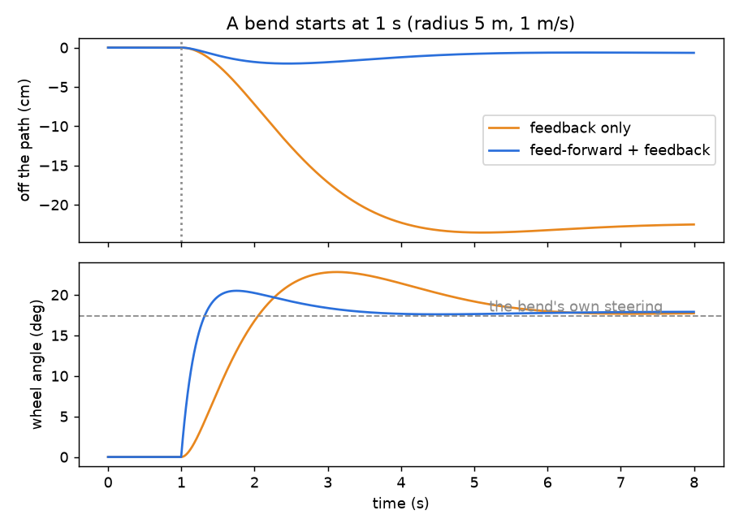
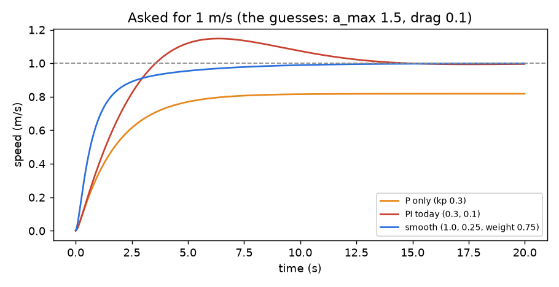
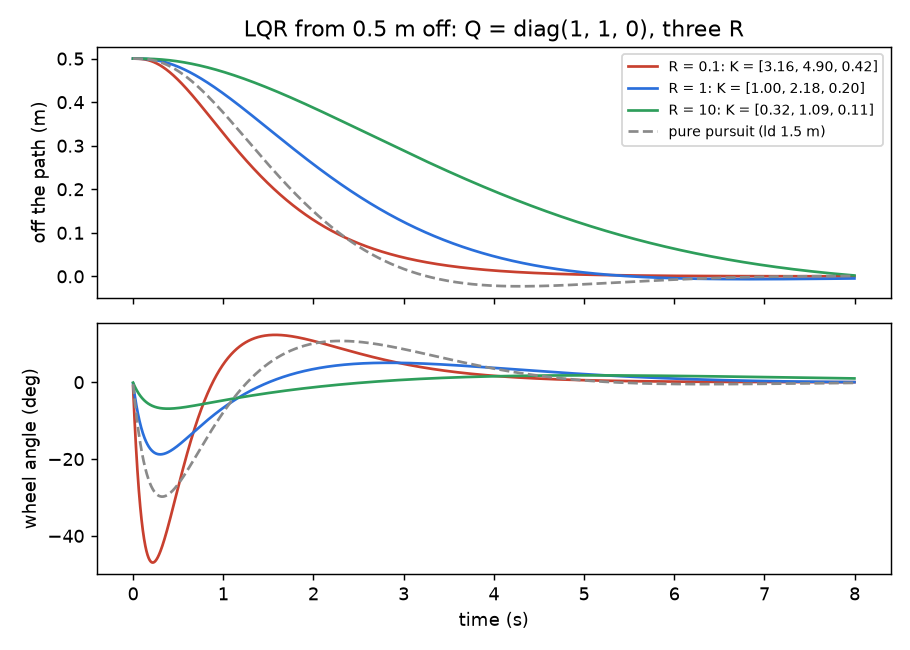
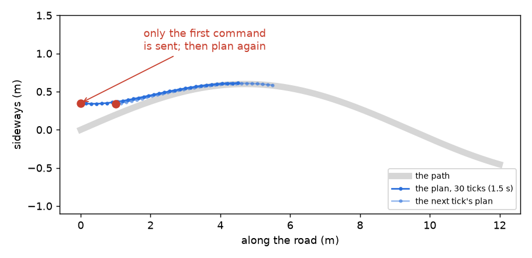
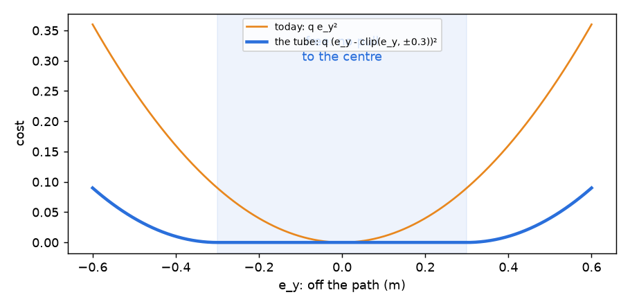
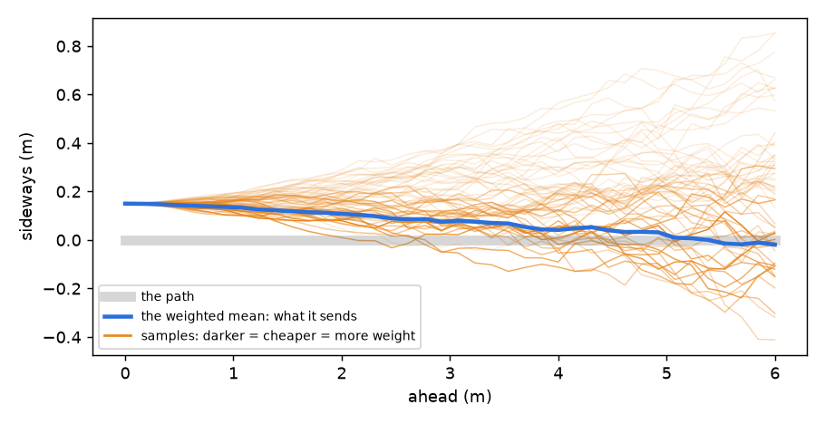
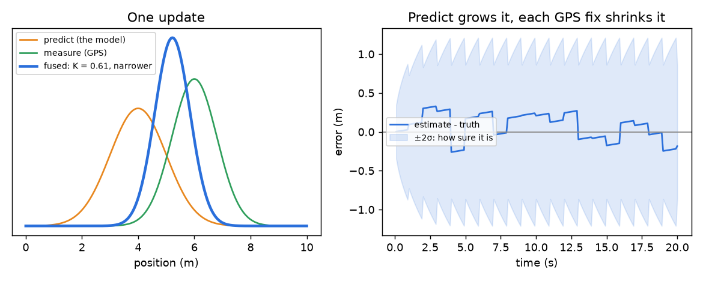

Ben, 21 Nov: "write a document explaining the mpc and the feed forward pi and all the different math and models that we use and how we can make them better ... I need to learn from it." Then: "LQR and LQI would be good too", "and the EKF".
Each section has the same four parts:
| Part | What |
|---|---|
| The idea | one picture, in words |
| The maths | the equations, step by step (the gentle start: learn state space) |
| On our car | where it lives in the code, and its numbers |
| Better | how we could improve it |
The figures come from tools/control_figures.py, using the same models and guesses as
the car as a linear model. Every car number is a guess until car
day's step tests measure it.
0. The whole chain
ESTIMATION CONTROL
sensors ──► EKF: where am I? ──► follower: what do I do? ──► ego ──► ESP32 ──► actuators
wheels, (section 9) MPPI or MPC (6, 7) limits speed loop steering
IMU, GPS, steering + set speed ramps PI (3) Jrk PID
lidar every 50 ms 50 Hz every 10 ms (its own)| Layer | Asks | Answers with | How often |
|---|---|---|---|
| EKF | Where is the car, which way, how fast? | a best guess and how sure it is | 30 Hz |
| Follower (MPPI, MPC) | Which steering and speed keep us on the path? | a steering angle and a set speed | 20 Hz |
| ego | Is that safe and possible? | the same, limited and smoothed | 50 Hz |
| ESP32 speed loop | How much throttle or brake gives that speed? | a pedal level | 100 Hz |
| Steering actuator (Jrk) | How do I turn the motor to that angle? | motor power | its own loop |
Two ideas run through everything:
- A model says how the car answers a command (section 1).
- A controller uses the model to pick the command. Feedback corrects what went wrong; feedforward acts on what we already know is coming (section 2).
1. Models: how the car answers
The idea
A model is a small set of equations: "if I send this, the car does that". Every controller here, and the EKF, uses one.
The maths: three pieces
The bicycle. Two wheels instead of four, about the rear axle:
The dot means "how fast it changes". δ = the wheel angle, L = the wheelbase, 1.561 m.
A lag. An actuator doesn't jump: it creeps toward the command. A first-order lag:
a = what the actuator does, u = what we asked, τ = its time constant.
After τ seconds it has done 63 % of the change; after 3τ, 95 %.
A dead time. Nothing happens at all for T seconds, then the lag starts. The camera frame's age and the ROS chain add these.
State space: the matrix form
Ben, 20 Nov: "state space is the matrix form for x order derivatives right?" Yes. Any n-th order equation becomes n first-order ones, stacked as a vector:
| Letter | Is |
|---|---|
| x | the state: everything the future depends on |
| u | what we send |
| y | what we measure |
The car's sideways motion, linearised for small errors (vehicle-model.md, section 3):
Read row by row:
| Row | Says |
|---|---|
| e_y' = v · e_θ | pointing off the path moves you sideways, faster at speed |
| e_θ' = (v/L) · δ | steering turns the car |
| δ' = (δcmd − δ)/τs | the wheels creep toward what we asked (τs ≈ 0.16 s) |
The eigenvalues of A say how the car behaves left alone: 0, 0 and −1/τs. Two zeros mean nothing pulls it back to the path. That's why we need a controller.
On our car
| What | Where |
|---|---|
| The full nonlinear model (lags, dead times, rate limits, the speed loop) | ros/bringup/aav_description/car-model/ (Rust) and car_model.py (car model) |
| Its numbers | vehicle.yaml actuators: |
| The linear version, poles and margins | tools/vehicle_model.py, vehicle-model.md |
The same model is used by ego (its look-ahead), MPPI, the MPC and the simulator.
Better
- Measure it. Car day's step tests (
car-test,tools/step_plots.py) give the real lags, dead times and throttle map. Fit, put intovehicle.yaml, and every controller gets better at once. - A dynamic bicycle (tyre slip) only matters fast or on ice: not yet.
2. Feedback and feedforward
The idea
| Acts on | Like | |
|---|---|---|
| Feedback | the error you can see now | steering back after you drift |
| Feedforward | what you know is coming | turning the wheel as the bend starts |
Feedback alone is always late: it waits for an error. Feedforward is fast but blind: if the model is wrong, it's wrong. Together: feedforward does most of the work, feedback mops up what's left.
The maths
For a bend of curvature κ (1/radius), the bicycle says the steering that holds it is
The first line is the bend's own steering (feedforward); the second adds the feedback.

What the figure shows (a 5 m bend at 1 m/s, pure pursuit's gains):
| Off the path | |
|---|---|
| Feedback only | 22 cm, and it stays 22 cm off: it needs an error to hold any steering at all |
| Feedforward + feedback | 2 cm, then back to nearly 0 |
That steady 22 cm is a rule: a feedback controller with no integral needs an error to produce an output. Feedforward supplies the output, so no error is needed.
On our car
| Where | Feedforward |
|---|---|
| The MPC's steering | ✅ atan(L κ) along the path ahead, shifted by the steering's dead time (feed_forward in aav_mpc_lag/crates/mpc-lag/src/tracker.rs; the node reports feed_forward_rad) |
| MPPI | in effect: its samples are rolled out on the path's bends, so the best one already turns |
| The ESP32 speed loop | ❌ tried on the model, turned down: with the throttle 2x stronger than guessed it overshot 88 % (vehicle-model.md) |
Better
- A speed feedforward, once the throttle map is measured: throttle ≈ (drag · v + wanted acceleration) / a_max. The PI then corrects only the map's error.
3. PI: the speed loop on the ESP32
The idea
PI is feedback with two parts:
| Part | Does | Alone |
|---|---|---|
| P: proportional | push harder the bigger the error | always a little short (needs an error to push) |
| I: integral | keep adding up the error over time | slowly removes that last bit |
The maths
The car (vehicle-model.md, section 1), with d its drag and a_max its full-throttle acceleration:
With a lag on the throttle too, in Laplace form (s ≈ "how fast"):
P is the car (throttle command to speed), C the controller.
Why the integral removes the error. The final value theorem: the error left at the end is 1 / (1 + C(0) P(0)). With ki > 0, C(0) = ∞, so the error is 0.
Why today's PI overshoots. The PI adds a "zero" at −ki/kp that sits near the car's slow pole, and kicks the response. The fix, a setpoint weight b:
The P part reacts less to a new set speed, but still fully to the car's own speed.

| Design | Overshoot | Settles | Error at the end |
|---|---|---|---|
| P only (kp 0.3) | 0 | — | 18 % short |
| PI today (0.3, 0.1) | 15 % | 13 s | 0 |
smooth (1.0, 0.25, b 0.75) |
0 | 6 s | 0 |
On our car
| What | Where |
|---|---|
| The loop | firmware/spine/crates/spine-core/src/speed_loop.rs, every 10 ms on the ESP32 |
| Profiles | default, smooth, lqi (speed_loop:=) |
| Anti-windup | clamping: no integrating while the throttle is pinned |
| Brake | a separate P loop past a 0.2 m/s coast band |
Better
- Pole placement on the measured car: pick where the poles go, solve for kp, ki (vehicle-model.md, "Pole placement").
- Gain scheduling if the car behaves differently at 0.5 and 2 m/s.
4. LQR: the best gains from the model
The idea
PI's gains are picked by hand. LQR picks them from the model, by answering: what feedback u = −K x makes this cost as small as possible, forever?
The first term is how far off we are; the second, how hard we work.
| You choose | Means |
|---|---|
| Q big | "I hate being off the path" |
| R big | "I hate big steering" |
The maths
- Write the model: A, B (section 1).
- Choose Q and R.
- Solve the Riccati equation for P (a computer does this):
- The gain:
K = R⁻¹ Bᵀ P. The controller:u = −K x.
What you get for free: the closed loop is always stable (if the model is right), with at least 60° of phase margin. That is the "maths proof it will resolve".

| R | K = [e_y, e_θ, δ] | What happens |
|---|---|---|
| 0.1 | [3.16, 4.90, 0.42] | back in 2 s, but 45° of steering: beyond full lock |
| 1 | [1.00, 2.18, 0.20] | back in 4 s, 18° |
| 10 | [0.32, 1.09, 0.11] | gentle, 7° |
The catch: LQR doesn't know about limits. R = 0.1 asks for more steering than the car has. That's what MPC fixes (section 6).
On our car
| Where | |
|---|---|
tracker:=lqr |
aav_track's LQR lane keeper, a trial follower |
VehicleModel.speed_lqi |
the speed loop's gains (next section) |
| Pure pursuit | is secretly a hand-made u = −K x (vehicle-model.md, section 3), which is why it fits on the same graph |
Better
- K that changes with speed (gain scheduling): A has v in it, so the best K does too.
5. LQI: LQR with an integral
The idea
LQR, like P, leaves a steady error when something pushes constantly (a hill, drag). LQI adds the integral of the error as one more state, so the LQR solves for the I gain too.
The maths
z is the integral of the speed error, added as one more state.
Solve the same Riccati equation for the bigger state. The k_z part is the integral gain, chosen by the maths rather than by hand. The ESP32 solves the discrete version (it runs in steps of 10 ms, not continuously).
On our car
| What | Where |
|---|---|
speed_loop:=lqi |
spine-core; one signed acceleration for both throttle and brake |
| Its gains | VehicleModel.speed_lqi (the discrete Riccati equation), in vehicle-model.md |
| Result on the model | 0 % overshoot, settles in 5.0 s, 44° margin: as good as smooth |
Better
- Re-solve K once car day measures a_max, drag and the lags. LQI's advantage over PI grows the better the model is.
6. MPC: LQR that looks ahead and respects limits
The idea
Every 50 ms:
- Predict the next 1.5 s (30 ticks) with the model, for a sequence of commands.
- Choose the sequence with the lowest cost, within the limits (full lock, the steering rate, top speed).
- Send only the first command. Next tick, start again from where the car really is.

This "plan, send one, plan again" is called the receding horizon. Replanning every tick is the feedback; the plan along the bends ahead is the feedforward.
The maths
The cost, summed over the 30 ticks (tracker.rs's header):
How it's solved:
| Step | What |
|---|---|
| Linearise | about the last plan, shifted by one tick: X = X̄ + M ΔU |
| Condense | write every future state through ΔU only: a quadratic in ΔU |
| QP | minimise ½ ΔUᵀ P ΔU + qᵀ ΔU within the limits: our own ADMM solver (qp.rs) |
| Send | u[0] and c[0] |
It is LQR's cost (section 4), with a finite horizon, limits, and the full lagged model.
The tube (21 Nov)
Ben: "It doesn't need to be super aggressive sticking to the line so that it doesn't oscillate so much."

Inside ±w the target for e_y is where the plan already is, so there is no pull to the
centre. Outside, the cost rises as before. Tuned 21 Nov: w = 0.3 m is the default
(mpc_lag_tube:=0 turns it off).
On our car
| What | Where |
|---|---|
| The Rust MPC | ros/drivers/aav_mpc_lag/ (tracker:=mpc_lag_rs), 1.6 ms a tick |
| The Python one | aav_track (tracker:=mpc_lag), 6.8 ms |
| Reversing | cut at cusps, a backwards stretch mirrored (20 Nov) |
| League, 21 Nov | every leg, the closest to the path, but 2x MPPI's sway (results) |
Better
- The tube ✅ tuned 21 Nov: 0.3 m cut University Drive's sway from 0.251 to 0.160 (MPPI: 0.132), every leg still reached.
- Tune r_rate (the cost on steering changes): more = calmer.
- The costmap in the cost (Ben's idea): the kerb as a wall, the yellow line costly, the other side costlier. Today the MPC follows only the path.
- A terminal cost from LQR's P makes the finite horizon provably stable.
7. MPPI: sampling instead of solving
The idea
Instead of solving for the best commands, try lots of them:
- Take the last plan and add random wiggles: 2,000 versions (
mppi_lag_1k: 1,000). - Roll each one forward through the car model.
- Score each one (the critics: path, goal, obstacles, smoothness).
- Average them, weighted by how good they were: cheap ones count a lot.

The maths
c_k = sample k's cost, ε_k = its wiggle, λ = how picky.
| MPC | MPPI | |
|---|---|---|
| Finds the plan by | solving a QP (calculus) | sampling and averaging |
| Cost must be | smooth, quadratic | anything: walls, lanes, if-then |
| Limits | exact constraints | samples clipped |
| Result | the exact best, for a linearised model | close to the best, for the full model |
| Calm? | can chase small errors | averaging smooths it: the calmest today |
Our change: the noise is correlated (smooth wiggles, AR(1) 0.8). White noise averages away through the slow steering, so every sample drives alike and MPPI learns nothing (mppi-lag.md).
On our car
ros/drivers/aav_mppi_lag/ (tracker:=mppi_lag), the default follower: 3.4 ms a tick on
a Mac; about 10 ms on the Orin.
Better
- Time
mppi_lag_1kon the Orin (TODO 152), then use it on the car. - Lane and kerb costs from the map (already a
LaneCritic).
8. Stability: will it settle?
The idea
A controller is stable if, after a push, the car comes back and stays. Three ways to check:
| Tool | Asks | Used for |
|---|---|---|
| Poles (eigenvalues of the closed loop) | do all of them have a negative real part? | every linear loop here |
| Margins (Bode) | how much extra delay or gain before it oscillates? | the delays: vehicle-model.md, section 4 |
| Lyapunov | is there an "energy" that always goes down? | LQR (its P is one); MPC with a terminal cost; Ben's safety filter |
The maths
Poles. For u = −K x, the closed loop is x' = (A − BK) x. Its eigenvalues λ:
| λ | Means |
|---|---|
| real part < 0 | the error dies away (faster the more negative) |
| an imaginary part | it rings (oscillates) as it dies |
| real part > 0 | unstable: it grows |
Lyapunov. Find V(x) > 0 (like distance², or LQR's xᵀPx) that always falls: V' < 0. Then x must go to 0. This is the "maths proof it will resolve".
The final value theorem. Where does it end up? lim s·E(s) as s → 0 (section 3).
On our car
| Loop | Poles | From |
|---|---|---|
Speed, smooth |
−0.28, −1.61, −8.2 (all real: no ringing) | vehicle-model.md |
| Pure pursuit at 1 m/s | −0.76 ± 0.78j, −4.6 (ζ 0.7) | vehicle-model.md |
Better
- Barrier functions (CBF), the safety filter idea: like Lyapunov, but proving the car never enters a bad set (the kerb, another car), instead of always reaching a good one. Each follower's look-ahead is checked against the barriers (Ben's thesis).
9. The EKF: where am I?
The idea
Every sensor is wrong in its own way:
| Sensor | Good at | Bad at |
|---|---|---|
| wheels | short distances | drift over time, slip |
| IMU gyro | turning | drift; no absolute heading |
| GPS | absolute position | jumpy, ±1 m, slow |
| lidar + map (NDT) | precise position | needs a map; can lose it |
The Kalman filter blends them: predict with the model, correct with each reading, trusting each by how noisy it is.
The maths: predict, then update
Predict (the model moves the guess; we get less sure):
Update (a reading pulls the guess; we get more sure):
| Letter | Is |
|---|---|
| P | how unsure we are (the covariance) |
| Q | how wrong the model may be |
| R | how noisy the reading is |
| K | the Kalman gain: 0 = ignore the reading, 1 = trust it fully |
| z | the reading |
The "E" (extended): the bicycle has sin and cos, so it isn't linear. The EKF linearises it at each step (F and H are Jacobians): the same trick as the MPC.

LQR's mirror image. The Kalman gain comes from a Riccati equation, the same one as LQR's, run in the other direction. Control and estimation are twins; that's why they're taught together.
On our car
| EKF | Fuses | Gives | Used by |
|---|---|---|---|
ekf_local |
wheels, IMU turn rate | smooth odom → base_link |
the followers, the local costmap |
ekf_global |
+ GPS, GPS heading (+ NDT) | map → odom, true position |
the planner |
Both are robot_localization, at 30 Hz, in 2D. Config: ros/localization/aav_localization/config/.
Choices worth knowing (learn-localization.md):
it fuses vy = 0 (a car can't slide sideways); the IMU gives the turn rate, never the
heading.
Better
- Tune Q and R from car day's recordings: the noise numbers are guesses today.
- A kinematic EKF (
pose:=kinematic_ekf): no gain in the sim, kept for the car, where wheels slip. - NDT leading, the GPS as a fallback (
--ndt-leads): 92 % of clouds gave a pose on the campus.
10. What to make better first
| # | Do | Helps | Needs |
|---|---|---|---|
| 1 | Measure the car (step tests, lock to lock, throttle map) | every model, every controller | car day |
| 2 | The MPC's r_rate, then the costmap in its cost (the tube is done: 0.3 m) |
MPC sway | the sim |
| 3 | Re-solve LQI and pole placement on measured numbers | the speed loop | 1 |
| 4 | A speed feedforward from the measured throttle map | faster speed response | 1 |
| 5 | Tune the EKFs' Q and R from recorded drives | where-am-I | car day's bags |
| 6 | The costmap in the MPC's cost (kerb wall, yellow line) | lane keeping | after car day |
| 7 | The safety filter (barriers) on every program driver | safety | Ben's thesis |
Glossary
| Word | Means |
|---|---|
| state x | the numbers the future depends on (position, heading, speed, wheel angle...) |
| A, B | how the state changes by itself (A), and from a command (B) |
| pole, eigenvalue | a "speed" of the system: negative = settles, positive = blows up |
| lag (τ) | creeping toward the command; 63 % after τ |
| dead time | nothing at all, then the lag |
| gain K | how hard the controller pushes for each unit of error |
| Q, R | in LQR and MPC: how much we hate error (Q) and effort (R). In the EKF: model noise (Q) and sensor noise (R) |
| Riccati equation | the equation whose answer gives LQR's best K (and the Kalman gain) |
| horizon | how far ahead the MPC plans (1.5 s) |
| QP | quadratic program: minimise a bowl-shaped cost within straight-line limits |
| covariance P | how unsure the EKF is: a spread, drawn as an ellipse |
| Jacobian | the slopes of a nonlinear function: how to linearise it |
Run it
pixi run python tools/control_figures.py # these figures
pixi run python3 tools/vehicle_model.py # poles, steps, margins
pixi run python3 tools/state_space_demo.py # the state-space teaching example